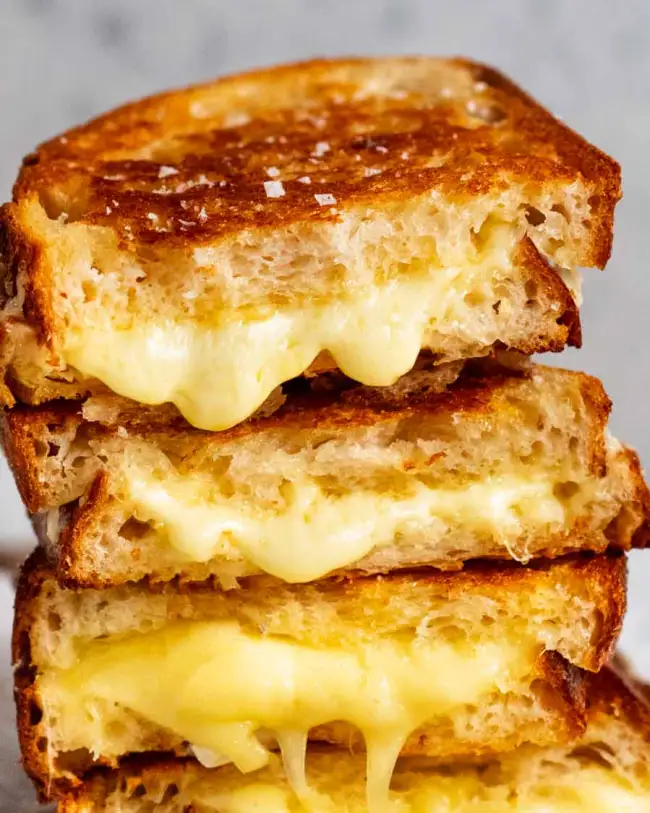

Description
Grilled cheese sandwiches at their simples consist of only two ingredients, bread
and american cheese. However, this recipe adds more to it to enhance the average
grilled cheese experience!
Original recipe here
Ingredients
- Bread of your choosing
- Cheese of your choosing
- Salted Butter
- Any other toppings of your choosing
Steps
- Grate the cheese with a grater. Store bought grated cheese wont melt properly!
- Butter all sides of the bread and preheat the stove
- Start toasting the bread and after flipping, add cheese
- Stack the bread on each other and toast for around 3 minutes on each side
- Cut the bread and enjoy!